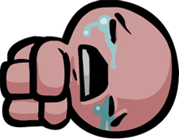

The Binding of Isaac é um Dungeon Crawler com elementos de um Roguelike, onde você joga como Isaac, uma criança que, apos sua mãe ter recebido ordems "de cima", ela enlouquece e entra em seu quarto com uma faca, pula para um porão onde deve lutar contra monstros, coletar items que o ajudam, e descer ainda mais fundo...

Jogue a DLC Wrath of The Lamb aqui